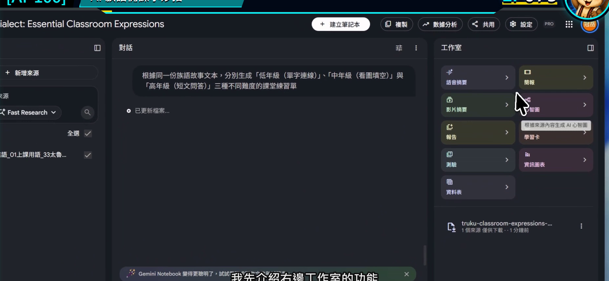
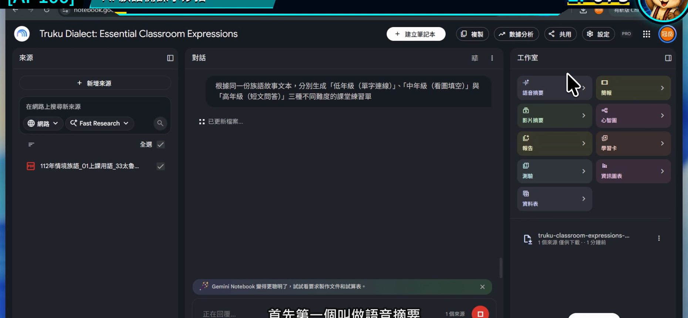
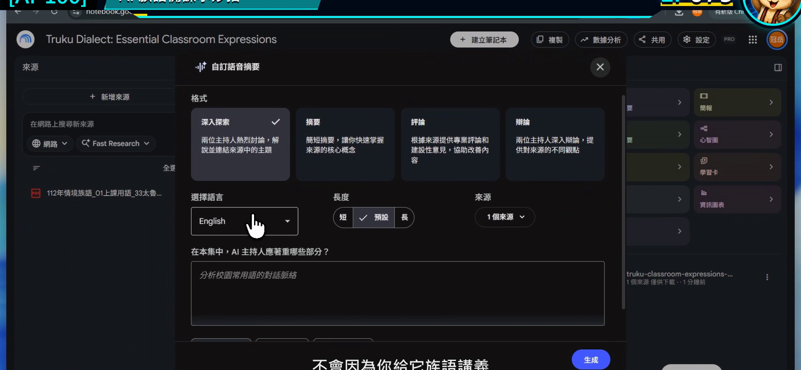
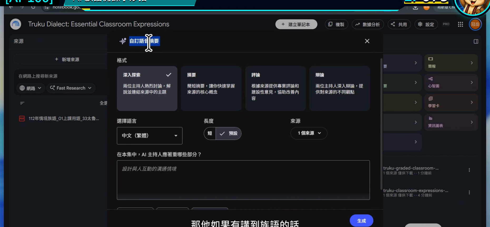
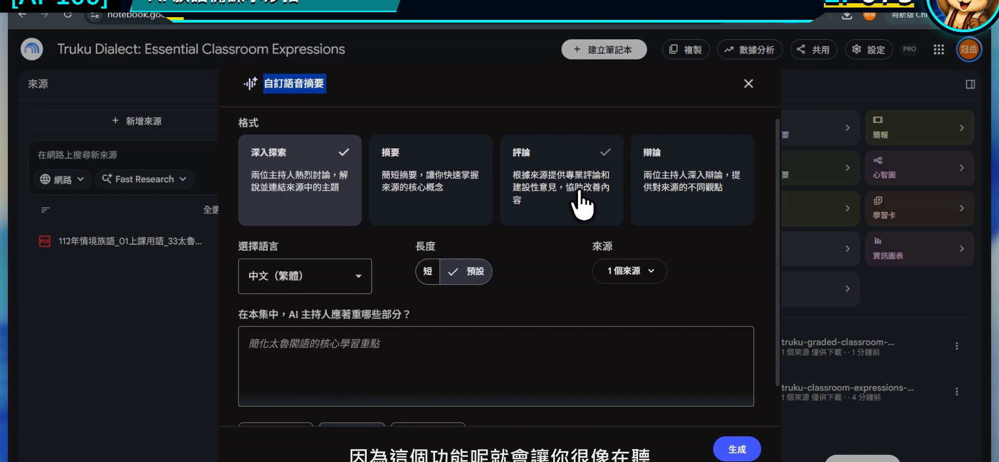

EP075｜使用語音摘要掌握教材重點
今天只做一件事
把一份比較長的教材或研究資料，做成一段給老師自己聽的語音摘要。
今天的成果不是學生跟讀音檔，也不是族語發音示範，而是：
一段幫老師先掌握資料結構與重點的備課音訊。
什麼時候特別好用？
手上有一份二、三十頁的研究報告、教學手冊或課程計畫時，不一定能立刻坐下來逐頁讀完。語音摘要可以先幫忙回答：
- 這份資料主要在談什麼？
- 哪幾段和我下週的課有關？
- 正式閱讀時要優先看哪裡？
它適合通勤、整理教室或準備教材時先聽一次，再回到原文細讀。
先說清楚：這不是族語發音教材
Gemini Notebook 的語音是根據來源生成的。遇到族語人名、詞句或特殊拼寫時，發音不一定正確。
所以今天的分工很明確：
- 語音摘要：幫老師掌握中文說明、章節脈絡與備課重點。
- 族語示範音：仍使用正式錄音、族語老師錄音或核定教材音檔。
只要把用途分開，這個功能就很省時間。
今天做完會拿到什麼？
- 一段聚焦在教學需求的語音摘要。
- 一張聆聽筆記卡。
- 三個需要回原文確認的頁面或段落。
開始前先準備
- 一份內容較長、來源清楚的 PDF 或文件。
- 先寫下你聽這段音訊的目的。
- 準備耳機與一張簡單筆記紙。
今天示範的目的：
先了解這份教學手冊中，哪些內容可以協助安排「日常問候」單元。
STEP 1｜只勾選這次要聽的來源
打開筆記本後，確認左側只勾選今天要做摘要的資料，再看右側工作室。
畫面要看到
右側工作室有語音摘要等成果入口。

老師要做
如果筆記本裡有很多不同主題，先取消不相關來源。語音摘要一旦混入太多材料，重點會變得很散。
完成後確認
輸入框旁的來源數量和你預計使用的一致。
STEP 2｜開啟語音摘要
在工作室選擇「語音摘要」。
畫面要看到
語音摘要的建立或設定入口已開啟。

老師要做
第一次先不要直接按生成。找看看是否有自訂、格式、語言或長度等設定。
完成後確認
你已經進入語音摘要設定畫面，而不是影片摘要或其他功能。
STEP 3｜選擇適合備課的格式
不同版本可能提供對談式、摘要式或其他格式。名稱可能更新，但選擇原則不變：
- 第一次快速掌握：選重點清楚的摘要格式。
- 想聽不同觀點：選較完整的討論格式。
- 資料很長：先做短版，確認方向後再做長版。
畫面要看到
設定視窗中可以調整語音摘要形式與語言等項目。

老師要做
語言先選自己最容易檢查內容的語言。不要因為來源含有族語，就把這段生成音訊當成發音依據。
完成後確認
你知道這段音訊要給誰聽，以及預計聽完要得到什麼。
STEP 4｜把「想聽什麼」寫進自訂欄位
不要只讓工具自由摘要。把老師真正想解決的備課問題寫清楚。
可直接複製的自訂文字
這段語音摘要是給族語老師備課使用。請聚焦說明：
1. 這份資料的主要目的與章節結構；
2. 和「日常問候」課堂活動直接相關的三個重點；
3. 老師正式備課時應回到原文查看的段落；
4. 來源沒有提供、仍需要老師另行準備的項目。
請使用清楚的繁體中文，不要朗讀或示範族語發音，也不要補寫來源沒有的族語內容。
畫面要看到
自訂焦點欄位已填入具體問題。

完成後確認
自訂內容有說明聽眾、目的與四個要點，不是只寫「整理重點」。
STEP 5｜生成後，帶著聆聽卡來聽
確認設定後再按生成。完成時間會依資料長度、帳號與使用量不同。
畫面要看到
設定內容已完成，可以送出產生語音摘要。

老師要做
播放時不要逐字抄。只記下面四格：
| 聽到的內容 | 我的筆記 |
|---|---|
| 這份資料主要在談 | ____________________ |
| 可以帶進這一課的重點 | ____________________ |
| 要回原文查看的位置 | ____________________ |
| 聽完仍缺的教材 | ____________________ |
完成後確認
聽完後，你能指出下一步要讀哪一段原文，而不是只覺得「好像聽懂了」。
聽完一定要做的三分鐘核對
- 打開摘要提到的原始段落。
- 確認重要數字、名稱與結論沒有被簡化錯誤。
- 把真正要放進教案的內容從原文整理出來。
語音摘要的價值是帶你找到重點，不是取代原始資料。
如果生成結果不理想
內容太廣，像整份資料導讀
把自訂文字改成：
只討論與國小中年級「日常問候」單元直接相關的內容，其餘章節用一句話帶過。
音訊一直念到族語詞句
補上：
遇到族語詞句時，請只說明它位於哪一段，不要嘗試示範讀音。
聽完不知道下一步
要求結尾固定提供：
最後列出老師接下來應回原文查看的三個段落或標題。
產生時間很久
先縮小來源，只選真正需要的一份；也可以先做較短格式。
放回備課流程的位置
最順的順序是：
先聽摘要找方向 → 回原文查證 → 整理教案 → 使用正式族語音檔。
它不是學生教材的最後成品，而是老師在大量資料前的一張路線圖。
完成前最後檢查
□ 我只勾選這次需要的來源。
□ 我先寫清楚聽這段摘要的目的。
□ 自訂內容聚焦在備課，不要求生成族語示範音。
□ 我有記下需要回原文查看的位置。
□ 重要內容已回到原始資料確認。
□ 學生若需要發音示範，會使用正式或老師錄製的音檔。
今天記住一句話就好
語音摘要幫你找到要讀的地方，原文才是你做決定的地方。
官方參考
下一篇｜EP076 生成簡報與教學文件